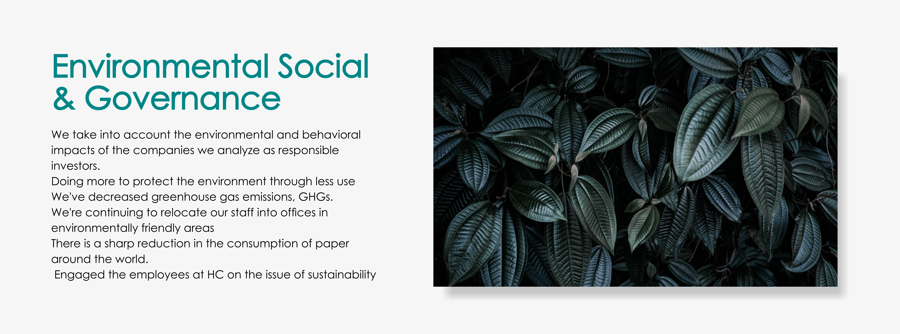

0

Harpcredit and the environment
Management of greenhouse gas emissions and energy consumption
We have been trying to cut greenhouse gas emissions for a long time. In 2020, we achieved the lowest overall emissions measured by tonnes of CO2e metrics since 2016 when we started reporting on this metric. We managed to cut emissions by 4.5% and 13% between 2019 and 2020, respectively.
Our climate change statement
As investors, we are working towards combining climate change risks with opportunities in our investment analysis, decisions and solutions. We continue to train experts and we are building our own tools, for example interaction with the ESIGHT collaboration platform. We also run a campaign to involve factories in climate hazards, especially encouraging companies that have no intention of reducing emissions to put them in their place.
From climate science to investment analysis.
To improve our analysis, we believe it is beneficial to understand more about the scientific cause of climate change which will enable us to translate its wider implications into inputs and tools. For example, as climate change becomes more widespread, population growth will slow and productivity is declining, reducing the economic impact on business profits. Certain of the company's assets, such as waste oil reserves, are going to be depleted or damaged by climate change. Investments will be changed, as well as additional costs linked to protecting and changing climate. The winners and losers will be created by this program. As indicated above, fuels producers will have a tough time and companies with new technologies and services that help cope with climate change, which include measures to reinforce concrete assets in the fight against climate change, will profit.
Tracing the risks of climate change to the financial statements
It may be helpful for analysts to link climate risks with their impact on the individual issuer's balance sheets, so that they can provide detailed information. For instance, hurricanes may destroy immovable property such as plants or buildings and require a large cost of repair or replacement.
An evaluation of corporate carbon measures and revenue statements can help identify the risks to transition from globalization towards a carbon free economy. The profits of the beef industry will be negatively affected if people are not able to obtain high carbon food sources, and as carbon costs increase. Factories that produce highly efficient technologies such as biofuels and smart grids, however, can be effective.
Greening the buildings and offices of HC
At HC, we are working to place 70% of our employees in green spaces and environmentally friendly buildings by 2025, as defined by estimates from Leadership in Energy and Environmental Design (LEED) or other local standards. We're very pleased to announce that the new office space of Shanghai has recently been certified with a gold LEED rating.
Greening the buildings and offices of HC
At HC, we are working to place 70% of our employees in green spaces and environmentally friendly buildings by 2025, as defined by estimates from Leadership in Energy and Environmental Design (LEED) or other local standards. We're very pleased to announce that the new office space of Shanghai has recently been certified with a gold LEED rating.
COMMITMENT TO THE LEADERSHIP OF THE INDUSTRY IN THE FIELD OF CLIMATE
HC participates in the organizations and programs related to climate change:
New knowledge and tools, enabling us to analyze the impacts of climate change on financial markets, are being developed by HC's investment professionals through collaboration with Columbia University's Earth Institute.
In order to help tackle the problems of climate change on financial markets, HC acknowledges considerable trade, economic and regulatory growth. This recognition has strengthened HC's relationship with the University of Columbia, which includes the HC's collaboration with leading climate scientists at Columbia University's Earth Institute to develop the Climate Science and Portfolio Risk curriculum and the role of HC as the Founding Partner of the Company Partnership -Columbia Climate School recently launched.
We have developed a training programme aimed at improving understanding, analyzing, sharing and incorporating climate risks and investment opportunities for portfolio managers, analysts and other stakeholders in the first phase of our partnership. The study also focuses on the science foundation of climate change, mitigation and adaptation strategies, policy implications, technology solutions as well as data sources to enhance investment processes.
ESG in action
A new sector will be created by measuring the impacts of climate change on investment levels, which needs to grow faster as information requirements, stakeholder expectations and market awareness increase. In the context of our work at HarpCredit, we are engaged in a comprehensive review of existing climate change providers and their various approaches with Columbia University's Earth Institute.
The issue
With incomplete data and dynamic approaches incorporating a challenge, climate change analysis is an emerging sector. Climate change has become a growing burden on investors to monitor in their portfolios.
The investment case
Property values are influenced by climate change, but it is still too early to measure this. A clearer understanding of the actual risk and opportunities in their portfolios will be gained by investors who are quick to incorporate these data into estimates.
Research objectives
It is good to start with analysis of the present climate change, but further progress needs to be made before portfolio managers can make complete use of these models when making investment decisions.
Property owners are interested in understanding the potential impacts of climate change on their holdings. Risk and opportunities, which can change the value of investments, are being explored by standard investment analysts on a daily basis. However, it has been very hard to estimate the potential impact of climatic change on company financial statements or portfolio performance for some time. A climate change analysis can help investors to understand the impact of climate change on tangible assets as well as opportunities and problems that a company faces in moving towards a lower carbon economy.
But it's still a work in progress, and the pain of growing up is everywhere. A unique system of data and analysis is in place for each provider, with different strengths and weaknesses. As investors are required to report portfolio risks or exposure opportunities by regulators, clients, beneficiaries and others, there is a risk of some interaction in the future. For the property manager, it's a lot of work.
Academic and investor collaboration
HarpCredit (HC) has formed an ongoing partnership with Columbia University's Earth Institute. In developing and delivering climate risk training for internal HCF investors and stakeholders, our team has joined forces with the Earth Institute. Next, those investors and stakeholders worked with the Earth Institute to produce our first statement accompanying the Taskforce on Climate-Related Financial Disclosure (TCFD). As a signatory to the UN Commitment for Investment (PRI), HC will eventually need to use it to analyze our investment status and performance, and we believe that our partnership with the Earth Institute will greatly benefit from that analysis.
HC is working on understanding, comparing and improving climate analysis over time. The process of developing a comprehensive Climate Change Report for the reporting and investment decision making will continue to be refined, as it is becoming more common.
In part due to our own experience, we are analyzing the different providers and their contributions. In particular, HC is using a model of climate change to evaluate Australia's budget strategy on the basis of the Harp 200 index. Our external providers have been informed of our experience with this model and of the large resources needed to accurately analyze climate change conditions in these 200 stocks, and have been able to analyze the situation where their impact can be combined with the details of effective portfolio management of large investment sites.
Criteria and prospective vendors
In the property category and on the market placement, vacancies were present for each supplier. Some companies provide services in developed markets, others operate emerging markets and not a single company offers frontier markets at all. It is only equity that some providers cover, while others are covering corporate and private debt in exactly the same way as or without it. There is no possibility to cover a company and other categories of assets are not included. Although the sector is relatively new, we have seen that suppliers are striving to close these gaps through acquisition and integration activities. We expect this trend to continue.
Assumptions matter
The following obstacle is the data used in each model. Information is provided by analytical companies and compiled by providers of climate change model. Because there are no weather disclosure requirements in place for the vast majority of companies, this data set is not complete and does not apply from start to finish.
The depth of disclosure also varies: data for one business unit or fewer business units? Disclosing companies also aggregate their data in different ways, such that they can offer essential information to key drivers rather than complete information.
Providers are using third party data or complex country based, sector and industry based estimates in order to compensate for missing data. Opinions are generally anonymous, and they can be very different. In order to increase the value of Climate Change Species, there is a need for clean and precise information; where no data are available, speculation should be reported.
Finally, the models for an analysis of situations are complex and there is a need to simplify them in order to produce reliable results. Model risk is measured in a variety of ways, e.g. others analyze the operation of a firm by sector and location, using general knowledge in order to interpret that into potential effects. Some go further, looking beyond simple industries or geographical exposure to businesses themselves, calculating how current investments can be affected by climate change — small limits, for example, from higher costs that include carbon taxes, and even how much mitigation work has been done.
Do you consider the mining of bitcoins to be a natural threat?
Critics say that there is a vast potential for mining cryptocurrencies. For example, bitcoin has the most secure structure of any cryptocurrencies and is supported by its enormous network profits while using a significant amount of power to maintain "Fort Knox" digital status. That being said, the network produces only 0.13% of global carbon emissions per year (Exhibition).
For the global CO2 emissions, bitcoin makes a negligible contribution
Efforts are being made to save energy. Mobile mining potential of Bitcoin is being transferred to sustainable energy sources and resources by a number of bitcoin producers. Indeed, because the bitcoin mining industry is so competitive, it seeks very low energy costs. The mining of Bitcoin rigs in North Dakota is powered by burning oil, helping to reduce methane emissions. In China, when the wet season produces excessive electricity generation with water, the remaining power is converted into a “Bitcoin value battery,” which is re-invested and restored to grid efficiency. And Bitcoin's mobile mining infrastructure means it can be connected to remote closed capabilities, which opens up access to renewable energy. Over time, we believe that efforts such as this will lead to significant improvements in the efficiency of Bitcoin mining and other cryptocurrencies.
Bitcoin transactions are transparent
Some critics are concerned that Bitcoin's secrecy is too great, but we consider it a misunderstanding. By the way, all activities that take place on a network are transmitted worldwide without delay and every node has ensured their compatibility with each output. After this, the work shall be recorded in a block licensed miner who has gained the right to "organize" that work group.
For every activity, the name, source of address and value are permanently printed on the blockchain. Anyone with Internet connection is able to look at everything that's going on and get the address of one of the Bitcoin Blockers. The transparency level is flexible and has significant implications for bank security and accountability. It's impossible to change. All payments shall be final.
With regard to developments in the use of bitcoin, administrators are paying close attention and have been trying to ensure that network abuse is controlled. Chainalysis, a company that performs data analysis on digital currencies, has carried out an investigation of the btc blockchain and incidents of fraud seem to have declined; only 0.34% of the network's usage is estimated for illegal activity according to recent figures.
Cryptocurrency promotes financial inclusion
The benefits of Bitcoin as a means to encourage investment were undermined by open concerns and environmental issues. As part of a grassroots investment research project, we have consulted a number of financially disadvantaged people in 2019. We've met a Venezuelan immigrant who fled from Venezuela, where the Bolvar crisis has collapsed, and inflation has exploded.
Despite having professional careers, his middle-class family had no choice but to leave. They had no means of withdrawing the cash they'd been saving, just as a lot of migrants fled their homelands. We were discussing the types of finance technology they're using on their iPhones in our meeting. One such technology was the Coinbase app, which enabled individuals to make savings and transfer money back into their families.
A story on the use of Bitcoin to convert money. No state runs it, and only an internet connection is needed to open a wallet. Unlike cash, the buyers of peer-to-peer Bitcoin do not require identification or bank accounts; they are free to be sure that your customer is known and have no strict account guarantee as opposed to purchasing from an exchange which requires a regulated legal document.
In the past, refugees could not carry their savings across the border when they fled the country and usually took whatever cash they could. Gold is in danger of finding a metal detector. The border guards were paid in cash a lot. But in order to secure your bitcoin wallet, 24 lines of encryption are used for ensuring that the balance will be protected by cryptographic codes. Access to the secret key is memorized, and the treasure is stored in the brains of the managers.
Bypassing governments in order to protect liquidity
The banking system is all right in a free democracy, and no one needs to anonymously fund it. In countries where the government exercises powers that do not respect civil liberties or human rights, about 4.2 billion people live in governments which can block citizens' access to payment networks as a political tool. Bitcoin currency is separate from state control and protects the right of all to their savings.
A number of countries have adopted digital currencies from the Central Bank. But concerns about privacy arise from this technology. Everything that's been done is easy to monitor, and governments can cut off the financing for political critics or opponents. It is appropriate to use some payments within the respective period of time.
There's also political control over the money. In the recent uprising in Myanmar, the military closed down the banking system and shut down the ATMs. In India, the Indian government received 85% of its revenue overnight in 2016, which resulted in a great economic hardship since all citizens were required to exchange their old notes. The potential financial risks associated with the funding of fiats issued by the government are highlighted in these examples.
Rapid growth is a result of bitcoin's ability to circumvent government funding. A new wave of interest in cryptocurrencies has been launched to thank those who want to keep their wealth out of traditional fiat money, which is no longer a metal guarantee of future purchasing power, as central banks furiously print money to raise money.
In the case of subSaharan
Africa and Latin America, which are particularly threatened by hyperinflation and currency collapses, this is also helpful for explaining why adoption of Bitcoin appears to be growing fast. As people exchange Bitcoin, and some governments try to limit trading by trading, peer to peer transactions are gaining momentum.
A simple way of accessing currency networks
Not all have easy access to payment networks, even in developed countries. Unpaid, unemployed and migrant workers who do not carry proof of address are considered to be bankrupt or insolvent. According to the World Bank, 1.7 billion people in the world do not have a bank account. According to the FDIC, there are 67 million people in the US either underbanked or bankrupt. For many low-wage earners, bank accounts also cost a higher percentage of the wages to go home. And sending money home across borders without a bank account is expensive and difficult. Bitcoin's Lightning Network technology allows micropayments to be sent quickly anywhere in the world, virtually free of charge, via a wallet app and an internet connection.
People who aren't bankers in the world and victims of oppression who don't have access to banks can benefit from bitcoin technology. In view of technological progress, we believe that energy concerns will decrease as new efforts are made to enhance energy efficiency and make use of residual power sources. The growth potential of the crypto companies listed on the public equity programme should be complemented by these environmental, social and governance benefits.
Shareholder participation
The scope of shareholder participation has increased since the start of the 2021 proxy season. In order to benefit all parties, including customers, staff, suppliers and the local community, more companies are being called upon to redefine themselves. In this changed environment, investor efforts to increase the number of long term shareholders by representing their votes will also have to be dealt with.
Major US companies have announced a maritime change in the organization's strategic objectives in a historic statement by the Business Roundtable in 2019. The statement further stated that companies are able to work for all interested parties, not only in the interests of shareholders. In view of the interests of all stakeholders, we consider that companies are in a better position to achieve success and generate good value for shareholders over time.
In view of the pressure on companies to ensure the wellbeing of their employees and to adapt to the needs of the communities in which they operate, the COVID-19 epidemic has helped to keep the programme moving away from a shareholding. A key way to help the good management teams while getting businesses back on track is through shareholder activism now that companies are beginning to recover from the economic downturn caused by the epidemic.
In spite of the fact that shareholders are free to consider other stakeholders' interest, they shall be empowered to do so through a representative vote. And, in some cases, investment managers who vote for shareholders are beginning to think about how to use this power, as benefiting stakeholders in general could improve improved financial performance, which in turn increases the number of shareholders. Some shareholders are also asking for changes in corporate governance structures, e.g. transforming the legal status to a publicly traded company. The purpose team can propose alternatives this year, even if we do not think that the shareholder proposals will be dominated by a legitimate business theme.
Shareholders want more additions
Proposals to increase shareholder participation in representative access, right to convene special meetings as well as pay and performance regulation reflect the responsibility of management teams. In order to assess whether US banks offer fair access to finance, a new article which came up in 2021 concentrates on racial equity research carried out by major American banks. For instance, banks are being pressed to confirm that access to neglected areas is restricted by the requirement of minimum balance requirements and additional business guidelines.
Environmental, social and governance EGS proposals are not the same. Rather than automatically support all proposals for ESGs or climate related shareholders, we have carefully considered the question whether each request will result in a greater number of investors at Harpcredit (HC). For example, we examine the importance of the ESG issue, the current company processes, instructions and the context of the proposal, and whether we believe the proposal will produce a long-term value. The core of the Representational Vote Framework has been that longstanding approach.
A significant component of our Representational Vote and Research process is corporate cooperation. Instead of relying on external rating agencies to direct our votes, we rely on an internal company analysis for a better assessment of the value and potential impact of each proposal.
Addressing the effect of climate on employee safety and environmental issues
Door manufacturer Masonite, based in Tampa, Florida, has a poor reputation for its environmental policies. Due to Masonite's lack of carbon emissions or climate change targets, we have chosen to focus on it as part of our 2020 theme engagement campaign. Ongoing conversations with Masonite demonstrate their understanding of the significance of the subject and their readiness to take decisive action to resolve it.
We discussed the company's performance in comparison to its competitors and the long-term importance of discussing carbon and worker safety at our first meeting. The business manager consented to bring up the matter with the board. Meetings with stakeholders have revealed that Masonite is progressing significantly, including combining ESG metrics.
Masonite also sought advice from a consultant to calculate its own carbon emissions with the goal of creating a development strategy and enhancing its disclosure in 2021. Masonite's wise development gave us the confidence to fully support the board and management.
Global deforestation has increased due to burning wildfires and changes in Brazilian government policies regarding environmental management. Major HC equity positions and a credit portfolio for Brazilian beef producers provide an opportunity to promote environmentally friendly behaviors that can reduce environmental risks and investment while assisting in the protection of tropical forests.
The problem
Tropical rain forests in Brazil are being lost at a startling rate, which is causing climate change. The primary contributing factor to this issue is cattle farming.
Case for investment
Brazilian beef producers offer an alluring return as a cheap producer of a good with rising demand globally and limited supply.
Engagement objectives
HC is negotiating with beef farmers and nonprofit groups to advance better cattle acquisition laws that could aid in the fight against illegal logging.
Since President Jair Bolsonaro took office in January 2019, Brazil's level of deforestation has significantly increased. Because they store a lot of carbon dioxide, tropical forests are essential for limiting climate change. This is because they lower greenhouse gas emissions. Because fires are frequently started illegally to clear the vastness of the forest for grazing, cattle farming is one of the main causes of deforestation.
Government officials have been urged to rethink policies that undercut trade protection by environmental organizations, businesses, and investors. Additionally, there is pressure on the government to uphold regulations that forbid the clearing of forests for the grazing of livestock and the planting of soybeans. Major beef producers responded at the same time by promising to incorporate anti-deforestation measures into all of their supply chains. However, there is still work to be done, and by interacting with businesses, investors can promote sustainability.
Scientific research indicates increasing deforestation
Scientific evidence cannot be disputed. More than 9,200 square miles [9,200 square kilometers] of Amazon rain forest were lost between August 2019 and July 2020, according to Brazil's National Institute for Space Research (INPE), a 34% increase from the 12-month period ending in July 2019 (Exhibit 1). From January to August 2020, INPE reported that there were three times as many fires in Brazil's Pantanal wetlands, a UNESCO World Heritage site that is home to some of the world's largest floods and biodiversity. Two provinces in the Pantanal, where about 25% of Brazil's cattle reside, are currently experiencing a cattle shortage that accounts for 80% of the price of packing meat.
According to INPE, the creation of new pasture areas was responsible for 65% of the Amazon biome's extinction between 2004 and 2014. Farmers frequently start fires in forested areas, create pastures there to raise cattle for profit, and then try to sell the land to other farmers for a profit.
Brazil's increasing rate of deforestation is receiving more attention internationally. More than 40 European businesses threatened in May to stop buying Brazilian goods if the country's government did not take action to stop deforestation. A month later, 29 financial institutions with a combined asset value of over $3.7 trillion alerted the Brazilian government to the possibility of secession.
Supply chain monitoring: the primary ESG challenge
The industry has made great progress in recent years in controlling direct cattle suppliers, who are typically big and experienced. Leading beef producers identify cattle farming activities linked to deforestation using government data and satellite data. They also joined important initiatives that call for independent audits and a commitment to evaluate suppliers, such as the Greenpeace Deforestation Agreement and compliance agreements with local prosecutors. For instance, a large sample of an official inspection of a foreign company by Minerva, carried out by Grant Thornton, in 2017 and 2018 was discovered close to the purchase of illegal cattle. Similar outcomes were found by Minerva in a 2019 BDO study.
But how reliable are industry plans to keep an eye on particular providers? He might, for instance, purposefully omit inspecting "missed" cattle obtained from lawful vendors. It is also necessary to include biomes other than the Amazon in monitoring systems, such as the Cerrado. While there is still much room for improvement, it is encouraging to see that the top meat suppliers have the technology and knowledge in place to guarantee that their particular beef suppliers will comply right away.
Major beef producers still have a long way to go to ensure compliance because it is extremely difficult to monitor indirect suppliers. The National Wildlife Federation estimates that outside the purview of particular meat suppliers, about 60% of illegal cattle-related deforestation occurs. The limited understanding of cattle tracking systems as they move through the supply chain is a significant barrier. As a result, it is challenging for meatpackers to guarantee that the cattle they purchase were not raised on farms linked to deforestation over time.
A new tool called Visipec, developed over several years by the National Wildlife Federation, aims to close gaps in the information systems required to hire indirect providers. Minerva is currently evaluating the program in the hopes that it will help the business fill in the gaps in its oversight of dishonest suppliers. Other non-governmental organizations (NGOs), such as ProForest, WWF, and Amigos de Terra, have been creating policy tools and suggestions to deal with the difficulties of policing dishonest providers.
What's HC up to now? Getting involved with stakeholders to encourage change
Brazilian beef producers that HC capture enables us to effectively communicate deforestation risks to management teams. Since 2016, we have examined each company's processes and encouraged them to advance them in the regular engagement meetings.
We discovered Minerva to be committed to ESG issues through our interviews with them. To address the risks of deforestation in the supply chain, significant steps have been taken. In addition to having the lowest levels of inconsistency among meatpackers leading research on its particular beef purchases, Minerva also gives an outside provider, NicePlanet, more peer freedom to identify areas flagged for non-compliance.
We wrote to Minerva's management in July 2020 to inquire about the company's adherence to ESG guidelines regarding management compensation. We believe that communication is the start of a dialogue that will encourage Minerva to include ESG intentions in compensation schemes, even though the company has stated that it does not currently do so.
Interacting with NGOS and the government
Additionally, communication with the government is crucial. Our analysts on a steady income have brought up our concerns about deforestation during meetings with representatives of the Brazilian Treasury. ESG factors are regarded as significant risk factors at AB and are taken into account when evaluating independent credit bases.
Our investment teams intend to increase corporate engagement while concentrating on defining important metrics to track development. We also intend to broaden our collaborations with related businesses and sectors, such as supermarkets, a significant local retail outlet, and other protein suppliers.
We are collaborating with non-profit groups like the EM Investors Alliance and non-governmental organizations (NGOs) like the National Wildlife Federation in the interim to enhance our comprehension of the Brazilian cattle supply chain. These groups offer information on which businesses uphold their obligations and which ones don't. In order to promote knowledge sharing and best practices, they also offer a forum for discussion with other investors with an interest in forestry.
Saving the forests supports return potential through ESG integration
These outreach initiatives play a significant role in our investment analysis. Investors and customers are both looking for businesses that will align their goods and services with global initiatives to cut greenhouse gas emissions. Producers of beef who struggle to adapt to deforestation run the risk of losing customers and contracts, having their credit ratings drop, and even being sued. Additionally, the entire value chain is under pressure. For instance, in September, NGOs sued a French supermarket called Casino for selling beef linked to deforestation and for not doing enough to monitor the source of its Brazilian meat.
We anticipate that as deforestation becomes more widely recognized, pressure will mount on importers to reveal their solutions in order to protect their companies from risk.
We think that investors are essential in reducing deforestation as pressure on Brazil from the rest of the world increases. Our portfolio teams can help Brazilian beef producers seize the opportunity for enticing investment returns by advocating significant change that not only affects the profits of the beef companies but also the ability of the Amazon rainforests to continue serving as the planet's lungs.